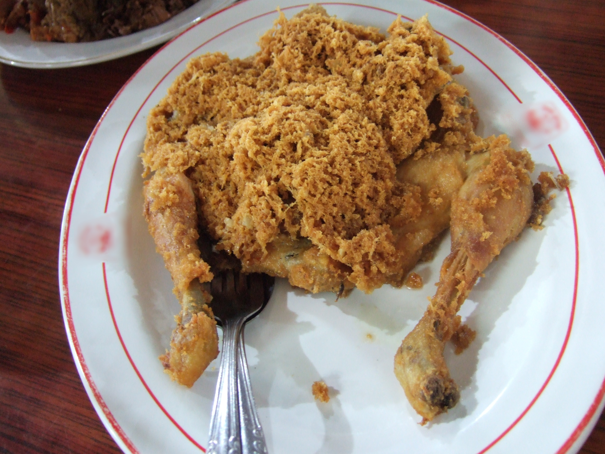

世界各国の様々なフライドチキン
インドネシア
アヤムゴレン(Ayam Goreng)
アヤムゴレンとは、インドネシアのフライドチキンのことで、レストランや家族の集まりでよく出される料理である。鶏肉をスパイスでマリネし、黄金色に輝くまで油で煮込んだものだ。ガランガルというスパイスは、見た目はショウガに似ていて、味もショウガに似ているが、より柑橘系で少し松のような香りがする。その黄色い色を出すために、ターメリックを使うのが有名なバリエーション。これにコリアンダー、ガーリック、ローリエなど、人気のスパイスを加えている。